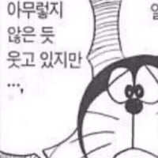
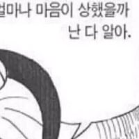

축구 금메달 따기 전에 나온 인터뷰임
그리고 이번 아시안게임에서 남자계주팀이 38.43초로 한국기록 경신하고 동메달 땄음
축구 금메달 따기 전에 나온 인터뷰임
그리고 이번 아시안게임에서 남자계주팀이 38.43초로 한국기록 경신하고 동메달 땄음
또 이색기네 ㅋㅋㅋㅋ
욕 좀 먹고 면제 받는게 낫지 뭔 ㅋㅋㅋ
비인기 종목으로서 아시안게임 동메달이면 인생최고의 업적이자
좋은 간판으로서 평생을
체육인으로 살아가기에 부족함 없이 어디서든지 인정받는 경력이지
실제로 대단한거고 자부심을 가질만한 일이고
못땃으니깐 가는거지 뭔 기분좋게 가 ㅋㅋ
이게 그...말이라도...
축구 인터뷰보고 느낀거 없나보네 얘는


그럼 넌 저 상황에서 "금메달 못따서 개좆같은 기분으로 군대 끌려갑니다" 라고 말하려고?
진짜 상남자 인터뷰긴하네


간다는데 뭘 또 그렇게까지 꼬아서 들어..
업적하나 없는 놈이 남 메달딴거에 비아냥 거리고 자빠졌네 ㅋㅋㅋ
평신
넌씨눈
혹시 비추 몇개임?
그럼 방송인터뷰에서 못따서 끌려갑니다 하겠슈?
서로 웃으면서 마무리 하자는데 그냥 거기서 끝내자
현재까지 너 같은인간 3명 있네?
군대갔다온게 인생 최대 업적이라도 되나보네 자랑스럽다!
수준하고는 ㅋ
한국신기록이면 면제 시켜줘라
인터뷰 좋게한사람들 많던데
좆같은소리한거 퍼져서 주목받는게 참 ㅋㅋ
솔직히 존나멋졌다
일본은 금메달 딸꺼라고 존나 설레발떨고
한국이 메달 딸꺼라곤 생각도 못하고 봤는데
한국신기록 갈아치우면서 동메달땄는데 지렸다
일본은 노메달
어우 속시원해
ㅋㅋㅋ 군대 얘기좀 씨발ㅋㅋㅋ 군대컵이냐
군면제 원툴 대회 ㅋㅋ
첫댓 조졌네